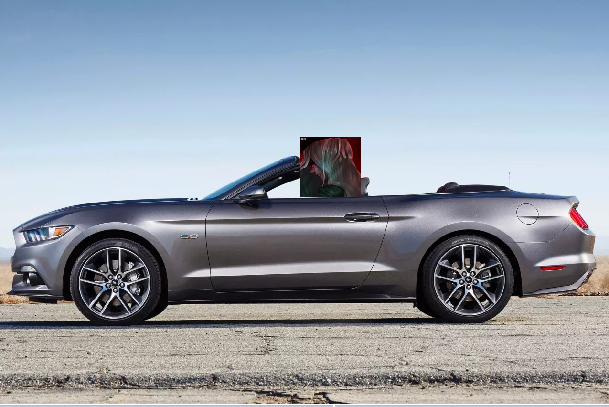

there are more classes with conversions then classes without. When a class is made, people expect a conversion; the non conversion is an exception.
You expect a conversion. Not people.
Also, you’re completely ignoring the factions. So you say that every class needs a conversion… what about already-converted classes? Do those need to be convertable too, because people expect a conversion?
Your argument makes zero sense.
1 Like
Most neutrals, except for mercenary, will not sell their freedom to take action because the good and evil demands it. They are the grey.
Rope
name 2 neutrals that are convertible
now try doing the same thing with unconvertible neutrals
1 Like
This was changed a while ago. Scorned now only has 2 targets which are guaranteed BD at the start of the game, and needs to live to see either of them lynched.
Unless you’re talking about FoL. I don’t think a Scorned has rolled in FoL in a while/ever anyway, so it probably hasn’t been updated.
I know it’s about guaranteed BD but their loyalty can change if they are getting converted by Cult leader or Mastermind later on the game.
Scorned can have their loss involuntarily stolen from them therefore they should absolutely not be convertable ever
2 Likes
Mercenary could have a target that they were able to save 3 guards with for the last 3 nights, all set to win.
Then MM’s dying convert is to convert them. I have seen this happen.
Once again, if you care so much about scorned not having win stolen:
-Either make scorned ill themselves after winning, or:
-make scorned lose convert capability after winning
After reading this thread, this is the only way I want “Scorned” and “Convertible” to be used in the same context.

5 Likes
You don’t want non-killer Neutrals to stay on game because they can vote, after like Scorned reaches the winning conditioning? Scorned can vote whoever they want after that.
I am with JammySplodge on this one
No point making Scorned harder on himself when he wins and then forced to survive and win with Unseen or Cult as Unseen / cult member.
No thanks.
1 Like
Did you not see my suggestion of either:
- scorned dying
- becoming immune after winning
?